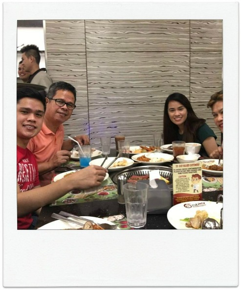
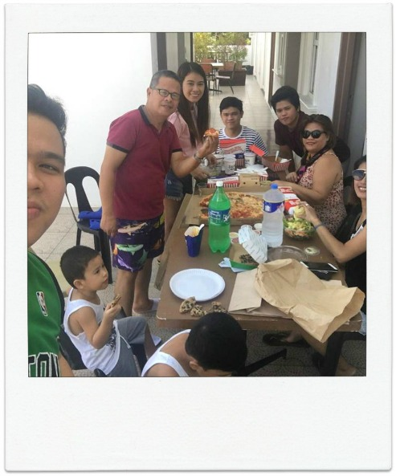
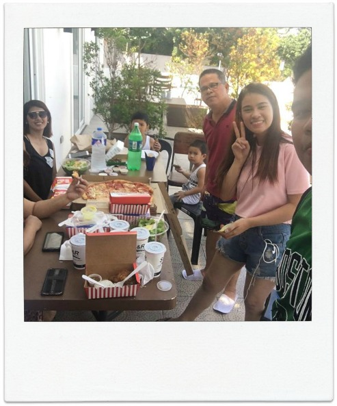
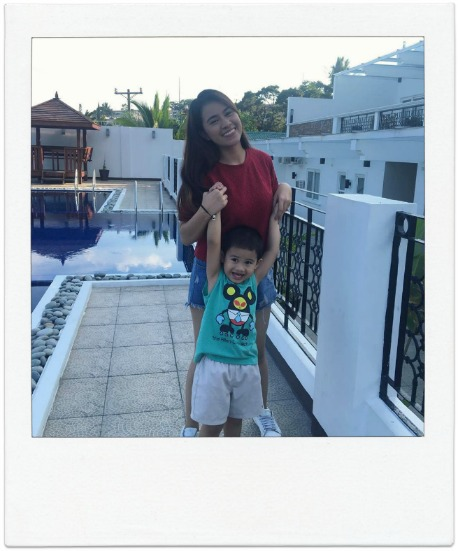

|  |
 |
|  | 
| We are 9 in our family including my nephews and my sister-in-law I have 3 other siblings, 2 boys and 1 girl. My kuyas may be protective most of the time, which can be a curse sometimes, but i love my kuyas to death. Me and my sister have that love-hate-relationship but I can still look up to as an older sibling. My family loves to eat out. So everytime that we have a free day we make sure to bond and catch up with each other in our favorite places "The love of a Family is life's greatest Blessing." |